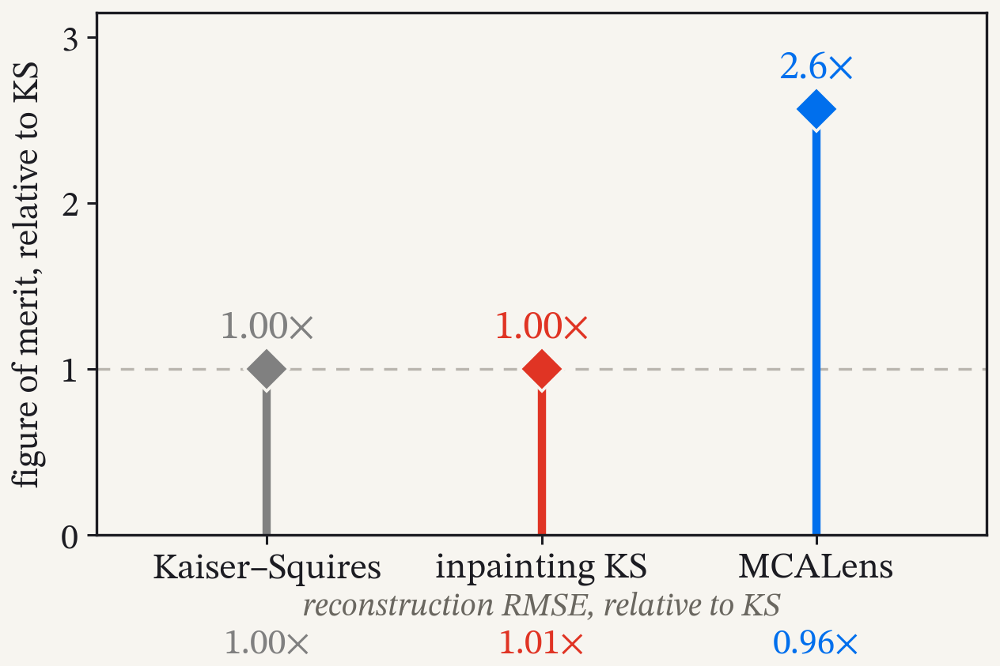
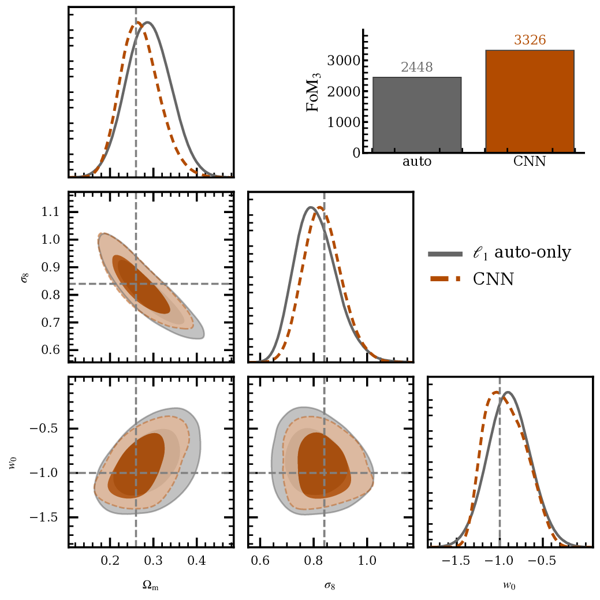
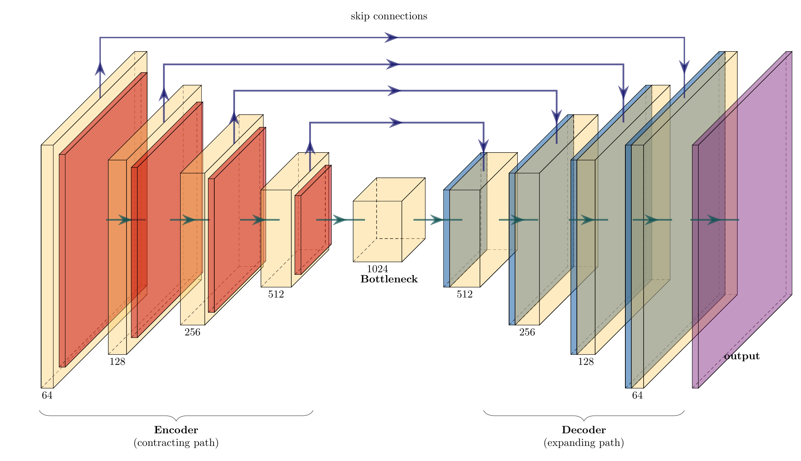
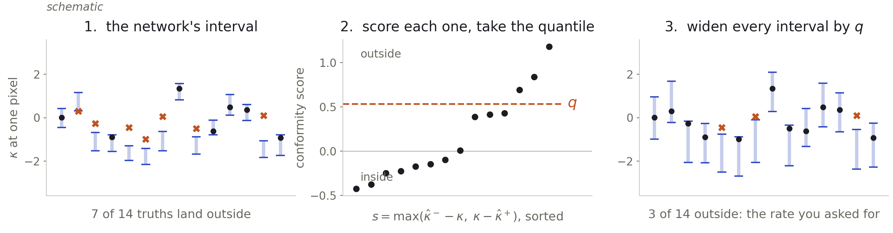
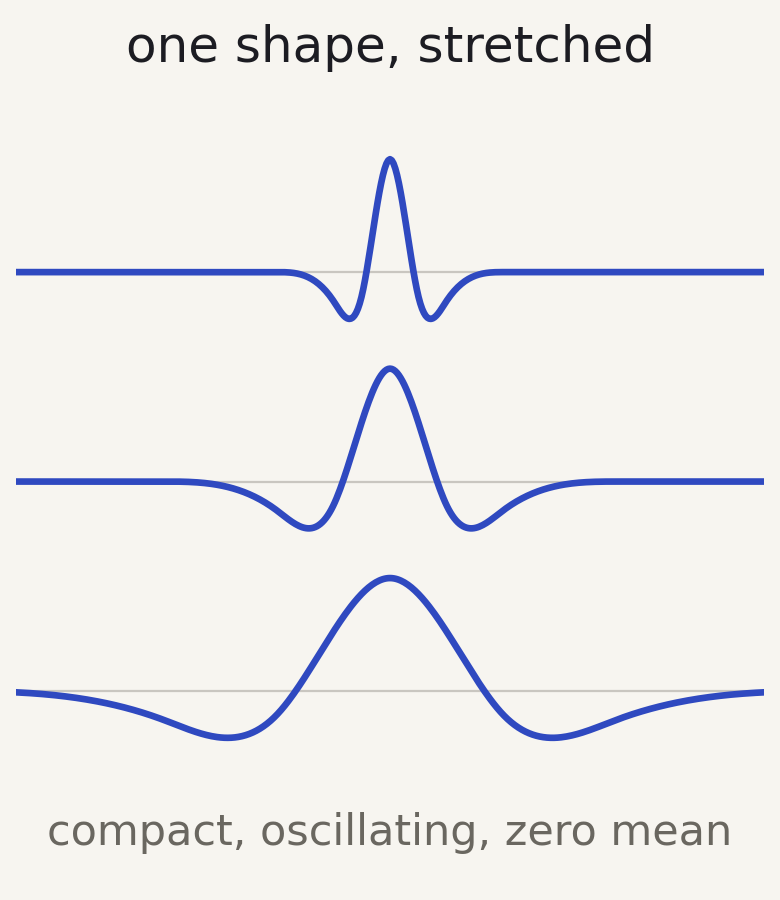
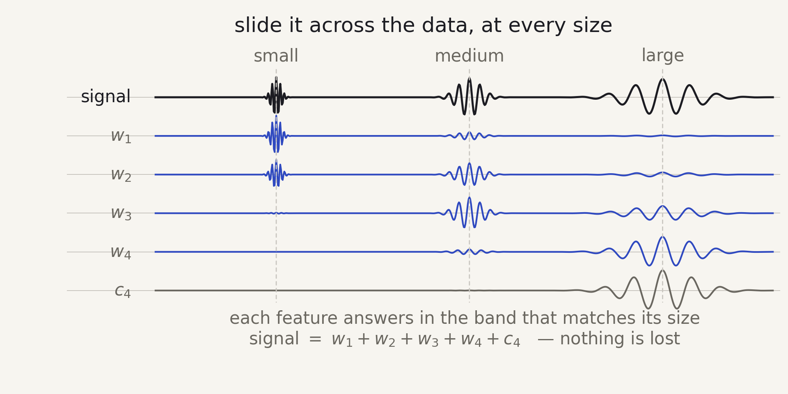
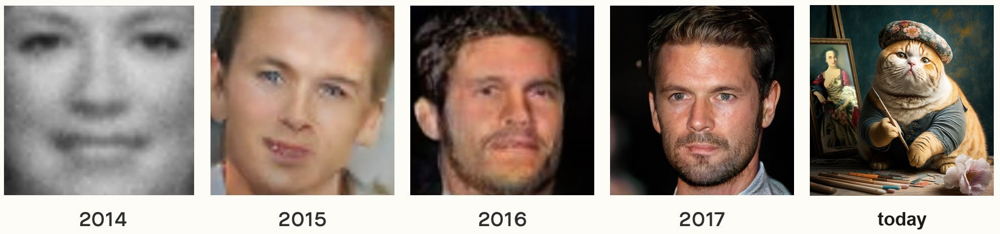
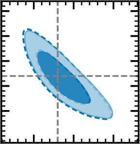
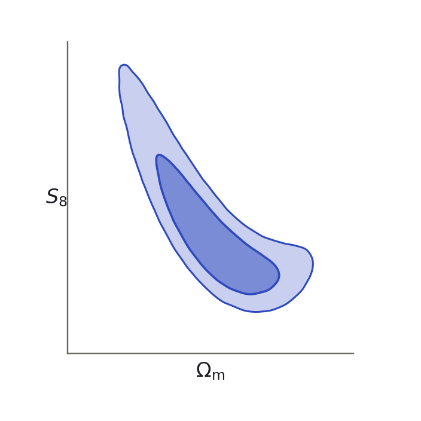

after the data
$p(\theta \mid d)$
posterior
∝
how well the parameters explain the data
$p(d \mid \theta)$
likelihood
×
before the data
$p(\theta)$
prior
where the learning goes in a weak-lensing pipeline, and how it is checked


Image © American Physical Society / Alan Stonebraker; galaxy images from STScI/AURA, NASA, ESA and the Hubble Heritage Team / astronomie.nl.

Lensing and clustering together, to measure cosmic geometry and growth at percent-level precision.
$$\gamma \;=\; \underbrace{\mathbf{M}}_{\text{the mask}}\quad \underbrace{\mathbf{P}}_{\text{shear operator}}\; \kappa \;+\; \underbrace{\mathbf{n}}_{\text{shape noise}}$$


Selecting one solution requires a prior on $\kappa$, and the choice of prior is what distinguishes the methods.

$$\hat{\kappa} \;\in\; \arg\min_{\kappa}\; \underbrace{\tfrac{1}{2}\big\lVert \mathbf{P}\kappa - \gamma \big\rVert^{2}_{\mathbf{N}^{-1}}}_{\text{data fidelity: does it match the shear?}} \;+\; \lambda\, \underbrace{\mathcal{R}(\kappa)}_{\text{regulariser: is it a plausible map?}}$$
the regulariser $\mathcal{R}$ encodes the prior on $\kappa$
Kaiser & Squires 1993, Bobin et al. 2012, Lanusse et al. 2016, Starck et al. 2021, Jeffrey et al. 2020, Remy et al. 2023
Everything else is fixed, so any change in the posterior comes from the reconstruction.


Only the two on the right survive a new mask or noise level without retraining. Plug‑and‑play does it in eight passes; the error bars come next.
$$\min_{\Omega}\ \mathbb{E}\left[\left\| G_{\Omega}(\gamma) - \big(\kappa - F_{\Theta}(\gamma)\big)^{2} \right\|_2^{2}\right]$$
its minimiser is the posterior variance, pixel by pixel: one forward pass, no sampling
$$\alpha - \tfrac{1}{n+1} \;\le\; \mathbb{P}\big\{\kappa \notin [\hat\kappa^-,\, \hat\kappa^+]\big\} \;\le\; \alpha$$
for any network and any distribution, with n held‑out maps: distribution‑free, finite‑sample
Romano, Patterson & Candès 2019, Leterme et al. 2026

the uncertainty map traces the structure

DeepMass and MMGAN need retraining for every new mask or noise level; PnPMass is trained once and applies to any configuration.


The missing information is in the Fourier phases. To reach it we need statistics beyond second order: peak counts, wavelet statistics, the ℓ1‑norm, Minkowski functionals.


local maxima of the $\kappa$ field, counted per $\kappa$ bin → focus only on a subset of the field
$\mathcal{S}_{j,i}$ are the coefficients of scale $j$ whose $\kappa$ falls in bin $i$
sum of absolute coefficients per band and $\kappa$ bin → encodes information from every pixel (peaks, voids, ...)
The likelihood $p(x \mid \theta)$ cannot be written down, but the simulator samples from it. The posterior is learned directly from simulated $(\theta, x)$ pairs.





The pixel-wise product of two channels is strong only where both have structure. One map per channel pair, each analysed with the same ℓ1-norm.
 the per-channel
the per-channeleach cell sums the ℓ1 weight of the pixels that fall in it


Kaiser–Squires step by step, inpainting, mass mapping as an inverse problem, the Bayesian view of the prior, and MCALens.
estimated with a Wiener filter, which needs only the power spectrum.
sparse in the starlet domain (peaks and haloes).
solve $\kappa_{\rm G}$, holding $\kappa_{\rm NG}$ fixed ↻ solve $\kappa_{\rm NG}$, holding $\kappa_{\rm G}$ fixed
Iterate to convergence. Each sub-problem is solved with a proximal step.
the proximal operator
$$\mathrm{prox}_{\lambda\mathcal{R}}(v) \;=\; \arg\min_{u}\; \tfrac{1}{2}\lVert u - v \rVert^{2} \;+\; \lambda\,\mathcal{R}(u)$$
_transparent_light.png)
Mass mapping has been treated as a preprocessing step with little effect on the cosmology, which is why the Euclid baseline is the simplest method, Kaiser–Squires.


The denoiser and the transformer it is built from, the residual variant, the per-pixel uncertainties and their conformal calibration, and the implementation.
The forward step carries the physics. The denoiser only has to know what a plausible convergence field looks like.
SUNet: a U-Net whose blocks are Swin-Transformer blocks rather than convolutions, with 7.2 M parameters. The noise level σ goes in as an extra input channel, so one model covers a range of noise instead of one level.

Take a simulated κ, add white Gaussian noise, ask for the κ back.
$$\hat\theta \;=\; \arg\min_{\theta}\; \frac{1}{n} \sum_i \big\lVert D_{\theta}\big(\kappa_i + n_i\big) - \kappa_i \big\rVert^2$$
σ is drawn uniformly over 0 to 0.2. No shear, no mask and no survey enter the training set.
The forward step may use any linear operator. PnPMass takes $\mathbf{B} = \mathbf{A}^{\!\top}\Sigma^{-1/2}$, which whitens the residual before adding it back. The denoiser then sees κ plus white noise of width $\tau$, whatever mask and galaxy density went into $\Sigma$. A MAP step would use $\Sigma^{-1}$, and the noise would arrive coloured.
Leterme, Tersenov, Fadili & Starck 2026, A&A 710, A292
What survives is the scalar $\tau$, whose usable range depends on $\Sigma$. DeepMass needs the full covariance, and a retraining for every footprint.


A network's error bar comes out the wrong size, and nothing tells you by how much. This is how you fix it.

$$\alpha - \tfrac{1}{n+1} \;\le\; \mathbb{P}\big\{\kappa \notin [\hat\kappa^-,\, \hat\kappa^+]\big\} \;\le\; \alpha$$
That fraction falls outside, whatever produced the bar. The calibration set can be small, nothing has to be Gaussian, and the network does not have to be right. The one condition is exchangeability: calibration maps and real data drawn on equal terms.
The guarantee is marginal: an average over many maps, not a promise about the one in front of you. Some regions do worse than the average, and peaks are the known case — the Wiener bars miss there systematically even after calibration.
Here: $2\sigma$, so $\alpha \approx 4.55\%$, from 1024 calibration maps. The correction sets a minimum size for that set: 21 maps at $2\sigma$, 370 at $3\sigma$, 15 787 at $4\sigma$.
Romano et al. 2019 · Leterme, Tersenov, Fadili & Starck 2026
Kaiser–Squires step by step, the Bayesian reconstruction stack, sparse recovery, the MCALens algebra, and the PnPMass implementation. Here for questions.



why wavelets for convergence maps
Bayes' theorem: the probability of the parameters given the data is proportional to the probability of the data given the parameters, times the prior.
The likelihood is usually assumed Gaussian in the data vector:
$$p(d \mid \theta) \;\propto\; \exp\!\left[-\tfrac{1}{2}\big(d - \underbrace{m(\theta)}_{\text{theory}}\big)^{\!\top} \underbrace{\mathbf{C}^{-1}}_{\text{covariance}} \big(d - m(\theta)\big)\right]$$
The posterior is then sampled with MCMC.

Learn the distribution from which a set of samples was drawn.


Learn $\mathbb{P}_\theta$, then sample from it.
2014–2017 panels adapted from Shirvani, Image Generation Models: A Technical History, arXiv:2603.07455

Start from a unit Gaussian and learn an invertible map to the target distribution. The density follows from the change of variables formula:
$$\log q_\phi(x) \;=\; \log p\big(f^{-1}(x)\big) \;+\; \log\left|\det \frac{\partial f^{-1}}{\partial x}\right|$$


When the pipeline says it is 68% confident, is it right 68% of the time? Both tests answer that by rerunning the analysis on simulations where the true parameters are known.
Both average over many simulated datasets: they vouch for the pipeline in general, not for the one dataset we have.


A full-sphere cross construction inflates this, but its channels carry 12–20% of their variance at ℓ < 18 against 0.4–1% for the autos. That is leakage. We use only the physically buildable flat-sky arms.


The answer to “FoM3 is fragile in a degenerate parameter space”: the marginals are quoted alongside it, and this is the population rather than a point. The ± on the medians is the spread over three independently trained compressors, the dominant source of run-to-run variability.

Baryonic feedback, the wavelet ℓ1-norm, and the BNT transform.
To be able to trust our HOS results we must investigate how they are affected by each systematic at the contour level.
Illustris: baryonic feedback reshaping the cosmic web
How much does unmodelled feedback bias our higher-order statistics, and how does that grow with survey area?
Once those scales are cut, is there any constraining power left to gain over the power spectrum?


measured at full map resolution: $\ell_{\rm max}=1024$ for $C_\ell$, all four wavelet bands for the HOS


on baryon‑safe scales
and this is conservative


A fixed angular scale stops mixing redshifts, so the cut can go only where the systematic is


BNT = a fixed, invertible transform → nothing can have been lost...
Tersenov+ 2026, A&A and Tersenov+, submittedfigure of merit retained under the nulling
Same four summaries. In the standard frame they span 38% in FoM; in the nulled frame, a factor of six.
nulled frame over standard


Nulling costs no constraining power provided some stage of the pipeline reads the bins jointly. The power spectrum with its cross-spectra is the simplest example.
Baryonic feedback is Part 4. These are the rest.
| systematic | what it is | how it is handled |
|---|---|---|
| intrinsic alignments | galaxies align with the tidal field, so shapes correlate without any lensing | 2pt: NLA, TATT. HOS: open |
| photometric redshifts | $n(z)$ from colours, not spectra. Stage IV needs $\bar z$ per bin to 0.002 | shift and width nuisances |
| shape measurement | PSF modelling, multiplicative and additive shear calibration, blending | calibrated on image simulations |
| masks and geometry | Kaiser–Squires is non-local, so gaps leak across the map: spurious peaks and B‑modes | inpainting, regularised mapping |
| covariance | no closed form for HOS. Hartlap factor, super-sample covariance | large simulation suites |
| source clustering | sources are assumed unclustered, and uncorrelated with the lenses | sub-percent for 2pt |
Every one of these is better understood for the two-point function than for higher-order statistics, and all of them bite hardest on the small scales where HOS earn their advantage.
All of it on simulations, deliberately. That is the first thing to change.
Not specific to lensing: a trained denoiser in a proximal scheme fits any linear inverse problem with known noise. Galaxy clustering; 21‑cm, where foreground removal sits where mass mapping sits here.




